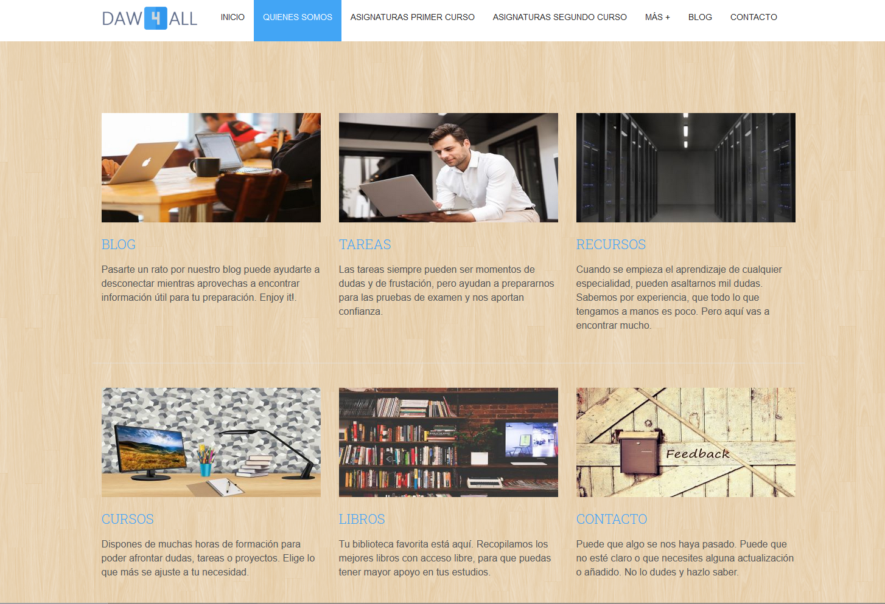

Daw4All

Daw4All.
Educational Platform for Web Development students.
Daw4All It is one more tool for people who, like me, are launched into the world of web development without previous notions, and especially, in the distance training modality.
From the basic notes of the various subjects, to extra courses, tasks or external resources, in order to make the learning curve more bearable.
Also, it maintains a direct line of contact with users, and thus promotes their updating..
For now, it is in a first phase of testing, with a selection of students belonging to the telegram group in the one I trained for, and with whom I maintain active contact.

As it is kept in a trial version and with access restrictions, it does not have a public part, but you can see a small demo of it below.
I hope to be able to show you its full potential very soon!.